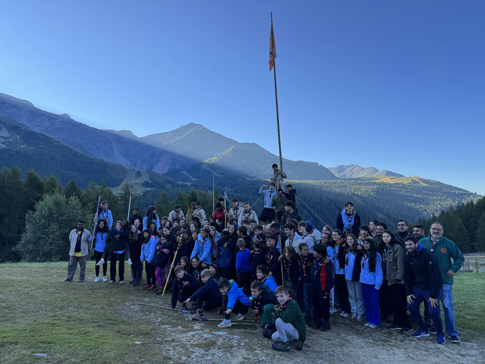
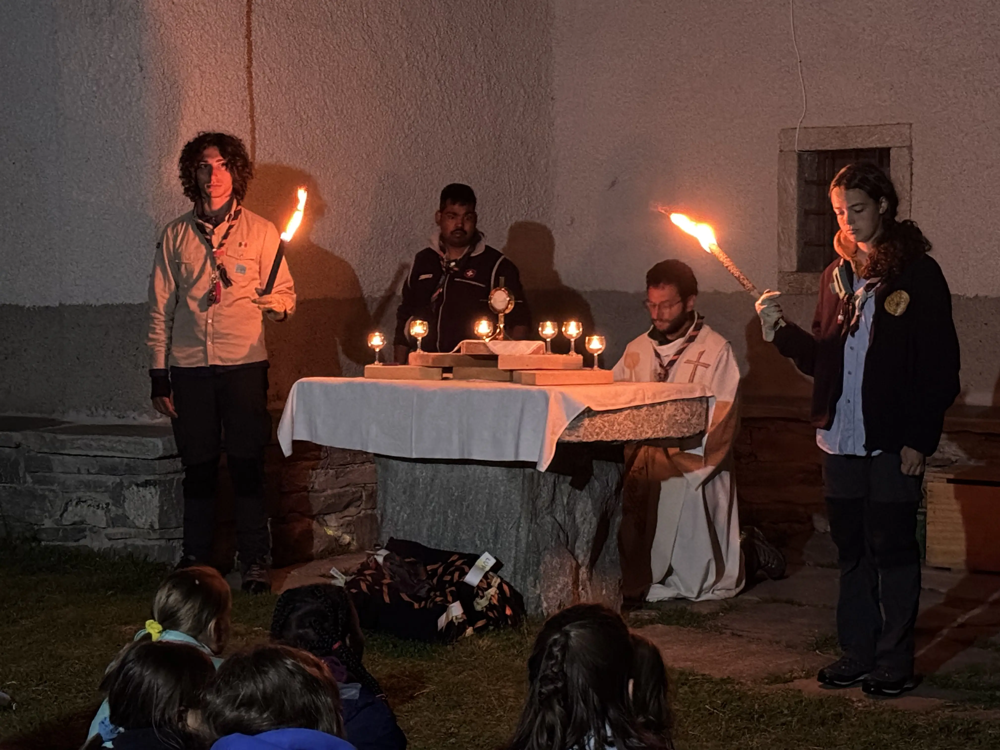
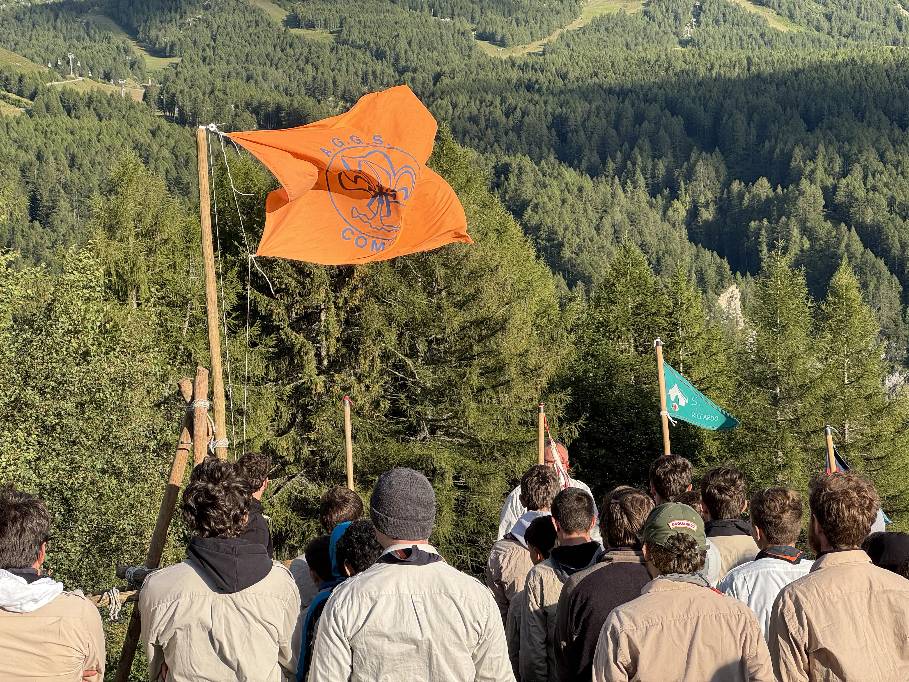
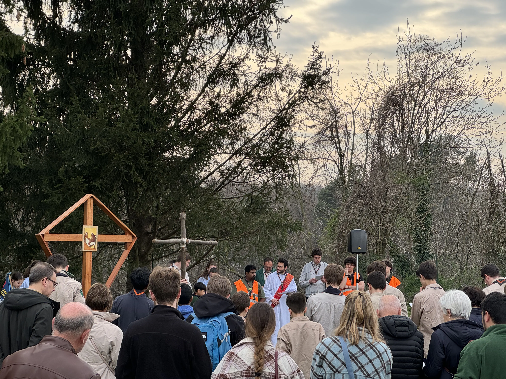
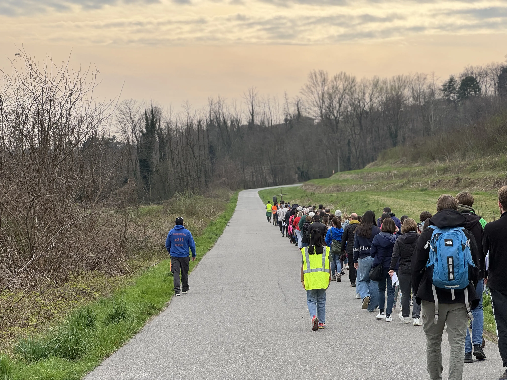
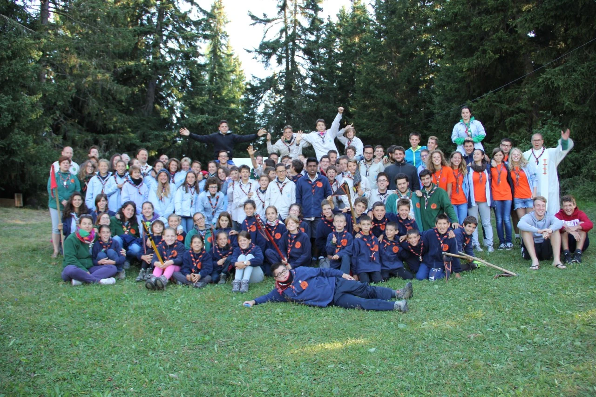
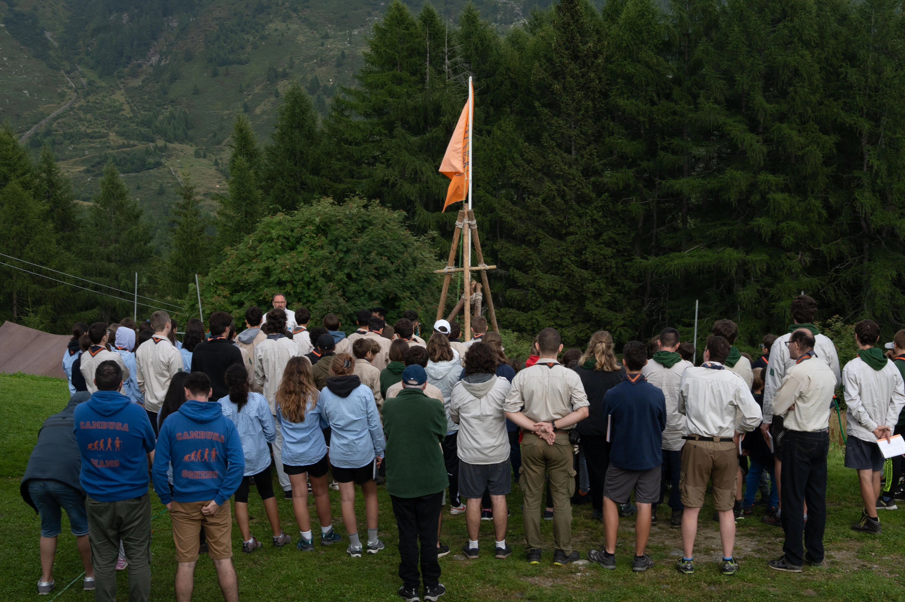
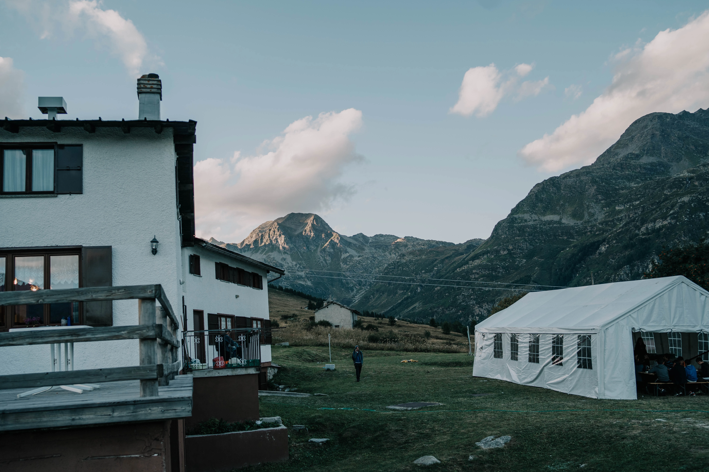
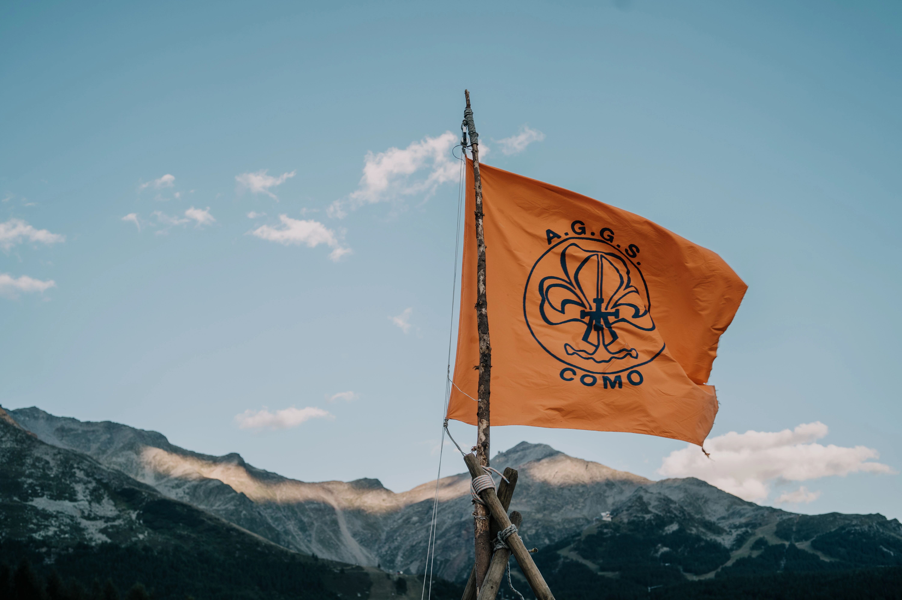

Chi siamo
La nostra storia, le nostre unità e le persone che rendono viva l'associazione.
La nostra storia
Il gruppo AGGS Como nasce all'inizio degli anni Duemila come gemmazione del gruppo di Varese.
Era il settembre 1977 quando a Varese don Giulio Greco, insieme a un gruppo di genitori, diede vita a una proposta educativa per far gustare ai ragazzi la bellezza dell'esperienza cristiana attraverso lo scoutismo. Da quell'intuizione è nata l'AGGS — e da essa è nato anche il gruppo di Como.
Como è una delle prime città in cui l'esperienza di Varese ha messo radici. Da allora camminiamo, accampiamo, costruiamo e cresciamo insieme — con la stessa passione educativa che ha mosso chi ci ha preceduto.
È un'esperienza che educa con pochissime parole, ma più che altro condividendo con i ragazzi, stando con loro, crescendo insieme. C'è una cura al singolo ragazzo in modo che trovi un luogo dove possa essere se stesso liberamente e possa giocare la sua libertà. Confidiamo che qualunque sia la strada che i ragazzi prenderanno rimangano attaccati a quel desiderio di bellezza che hanno potuto sperimentare in questa compagnia.
Chi siamo oggi
Siamo un'associazione di promozione sociale affiliata NOI, con sede a Bulgorello, in provincia di Como. Ogni settimana decine di ragazzi e bambini si ritrovano per vivere un'esperienza che non si trova facilmente altrove: stare insieme in modo vero, imparare facendo, crescere guardando chi è più grande.
A guidarli ci sono i capi: giovani universitari e lavoratori che impegnano gratuitamente il loro tempo per quest'opera, mossi dal desiderio di condividere qualcosa di bello con i ragazzi.
Le nostre unità
Quattro gruppi, due coppie miste. Perché crescere insieme è parte del metodo.
Come funziona
Il ritmo delle attività durante l'anno.
Ogni mese
Due riunioni in sede il sabato pomeriggio e un'uscita domenicale.
In primavera
Un campetto di fine settimana, primo assaggio di vita in tenda e comunità allargata.
In estate
Il campo estivo in agosto: circa una settimana in montagna con tende, sacco a pelo e cucina da cambusa. Il momento più atteso dell'anno.
Non c'è una frequenza obbligatoria, ma la continuità di partecipazione è quello che permette di vivere davvero la proposta.
Dove siamo
Le riunioni si tengono presso l'Oratorio Santi Pietro e Paolo, in Via Monte Rosa 5, Bulgorello (CO). Siamo facilmente raggiungibili dalla città di Como.
Apri in Google MapsLa nostra galleria
Momenti di vita scout che raccontano la nostra avventura quotidiana.









Unisciti all'avventura
Le iscrizioni per il nuovo anno associativo sono aperte. Porta tuo figlio o tua figlia a scoprire il mondo scout!